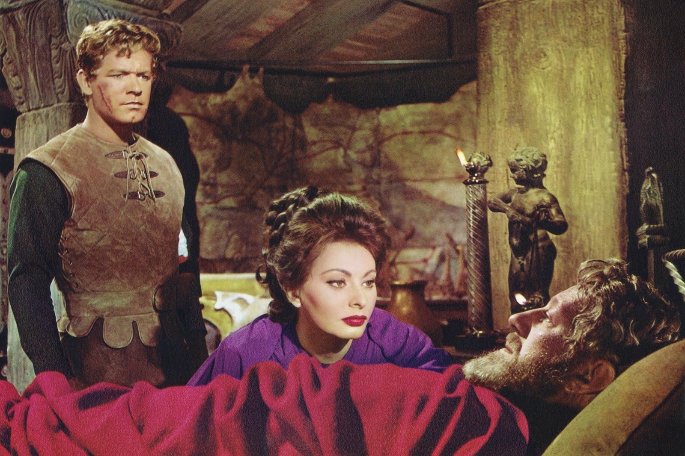
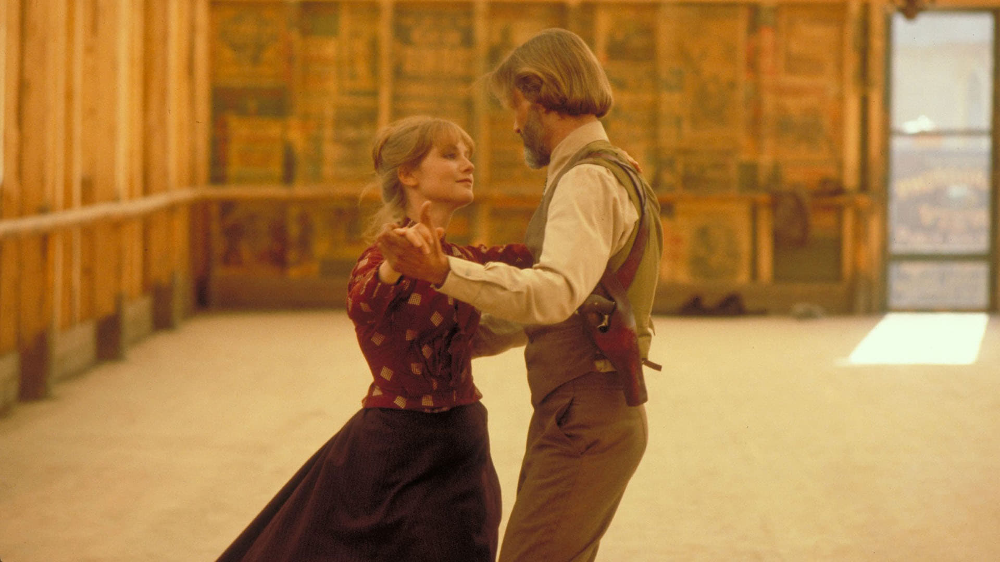
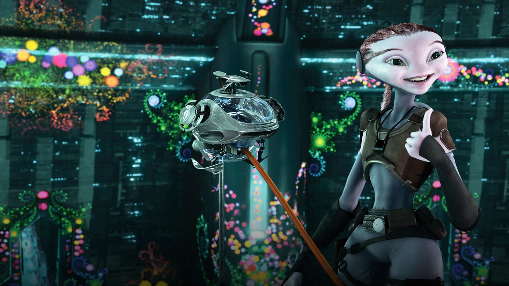
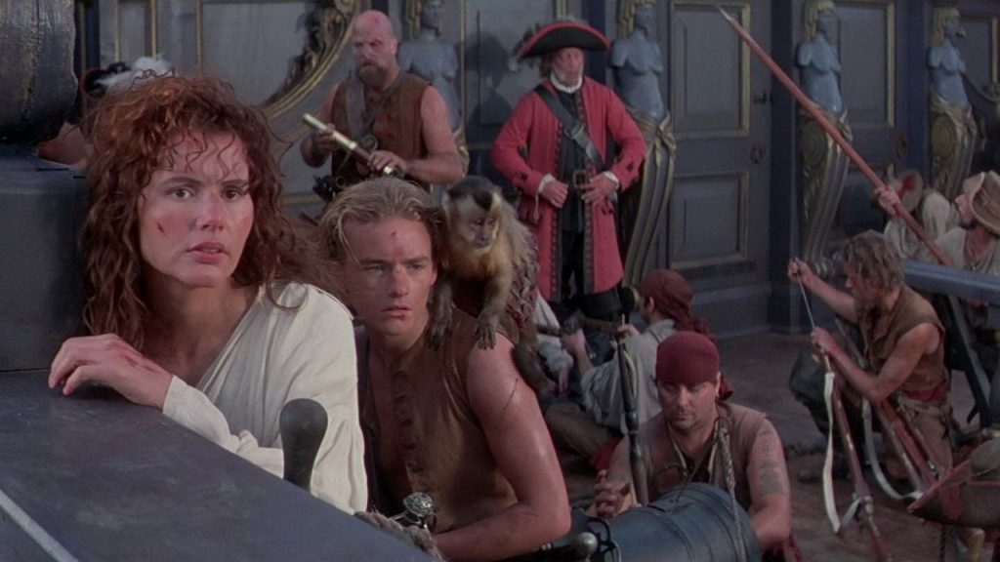
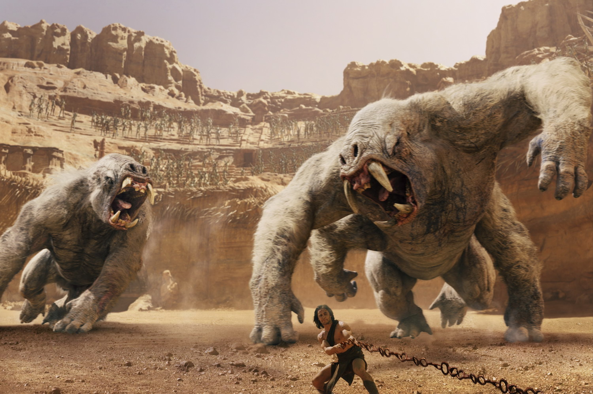

Hasta marzo de 2020, todas las listas con los mayores fracasos en taquilla del cine comercial norteamericano tenían algo de sentido. O, al menos, rasgos en común. Sin embargo, la pandemia y su apabullante colección de condiciones extraordinarias se llevaron por delante apuestas tan seguras en un contexto de vieja normalidad como Onward, Wonder Woman 1984, Viuda Negra, Tenet o Jungle Cruise. Pero, ¿realmente podemos tachar de flops a películas que tuvieron un estreno simultáneo o casi inmediato en plataformas de streaming? El covid cambió las reglas durante un periodo de meses que sólo ahora parece cerrarse de una vez por todas.
Con esto en mente (y con El Escuadrón Suicida como una representante de la Excepción Pandémica en toda la lista), hemos intentado ser lo más rigurosos posibles a la hora de escoger ejemplos de lo que el argot hollywoodiense considera “bombas” en taquilla. Hablamos de películas, normalmente superproducciones, que no sólo hacen perder a sus estudios un buen montón de dinero, sino que también son de alguna manera estigmatizadas por la prensa, en ocasiones incluso antes de lleguen al público. Lo cual no quiere decir, ni mucho menos, que un fracaso comercial sea sinónimo de una mala película. No es un proceso automático, al menos, por no hablar de que sobre gustos no hay nada escrito.

Por otro lado, muchos flops estrenados a partir de principios de los noventa, como por ejemplo Waterworld, acabaron recuperando su inversión y hasta generando un pequeño (si bien tardío) beneficio gracias al mercado doméstico, los derechos para televisión y otras fuentes de ingresos adicionales. Oh, y también hemos dejado fuera películas como Cleopatra, que sí hicieron algo de dinero en taquilla… pero que sufrieron un proceso de producción tan marcado por el despilfarro que jamás hubieran podido salvarse, por muchas entradas que vendieran. Sin más dilación, echemos un vistazo a 5 de los mayores fracasos en taquilla sufridos por Hollywood en toda su historia.
5. La caída del imperio romano (1.964) - 125 millones de dólares en pérdida
El tipo de épicas históricas que Samuel Bronston solía producir y titanes como Anthony Mann solían dirigir se chocó aquí contra una iceberg. Tan lleno de estrellas como lastradas por sus incoherencias argumentales, este ambicioso péplum se hundió por su propio peso pero actualmente es valorada como de gran interés. Fue galardonada en 1965 con el premio Globo de Oro a la mejor música (Dimitri Tiomkin).
4. La puerta del cielo (1.980) - 133 millones de dólares en pérdida
Michael Cimino era un genio, pero nadie puede culpar a United Artists por perder la paciencia con él en uno de los rodajes más duros y desorganizados de la historia. El montaje estrenado en cines enterró para siempre el sueño del Nuevo Hollywood y significó la quiebra de la productora que posteriormente fue adquirida por Metro-Glodwyn-Mayer. Al menos el director's cut es sublime.
3. Marte necesita mamás (2.011) - 173 millones de dólares en pérdida
Nadie sabe cómo el estudio de animación de Robert Zemeckis pudo dar luz verde a un proyecto tan agresivamente feo como este. Su fracaso, unido al de la anterior Cuento de navidad, dio carpetazo a un remake de Yellow Submarine que ya estaba en pre-producción. La película fue un fracaso comercial, con un presupuesto de 150 millones de dólares obtuvo menos de $39 millones en la taquilla y significó una pérdida de 173 millones de dólares en relación a la inflación.
2. La isla de las cabezas cortadas (1.995) - 187 millones de dólares en pérdida
Una aventura de piratas bastante divertida acabó naufragando porque todo el mundo se puso de acuerdo en que el género estaba muerto. Disney se temía lo peor antes de estrenar su primer Piratas del Caribe, pero en aquella ocasión todo salió bien. Lo cual es un tanto injusto ya que en el fondo, “La isla de las cabezas cortadas” no es tan mala.
1. John Carter (2.012) - 236 millones de dólares en pérdida
Lo curioso es que los motivos de su debacle no fueron los habituales: ni una producción caótica plagada de incidentes como sucedió en Waterworld (1995), ni la lucha de egos entre sus estrellas (y algo de brujería) que se llevó por delante La isla del Doctor Moreau (1997), ni las toneladas de whisky y cocaína que arruinaron el Popeye (1981) de Robert Altman. Todo lo contrario: en John Carter el problema fue el excesivo respeto que Disney mostró por su director y la laxitud de unos ejecutivos inexpertos. Pero ¿quién iba a rebatir algo a Andrew Staton, uno de los mayores valores de Disney tras los éxitos de Buscando a Nemo (2003) y de WALL-E (2008)? Nadie quería perturbar a la estrella de Pixar, la verdadera gallina de los huevos de oro del conglomerado.
